一个公司可能有几个银行账号或现金账号。使用yuancloud,内部转移钱只是几个点击就可解决了。
我们用下面的例子来说明。我公司有两个银行账户,我想把50.000欧元从我们的银行账户转移到另一个。
配置
检查科目表以及默认转账账户
处理内部转移你需要在科目表中需要一个转移科目。YuanCloud将自动生成一个帐户基于你国家的科目表。参数科目表, 在会计模块中检查默认的转账科目,选择 .
当你注册时, 会根据你的国家信息, 预设科目表,它不能被改变。
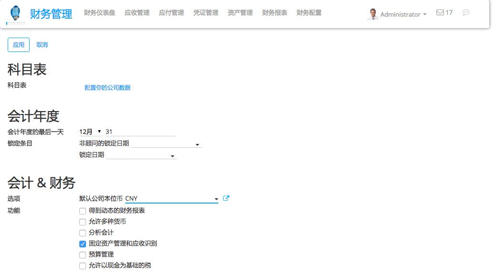自动生成默认的转移帐户取决于你们国家的立法。如果有必要,可以修改相同的页面。
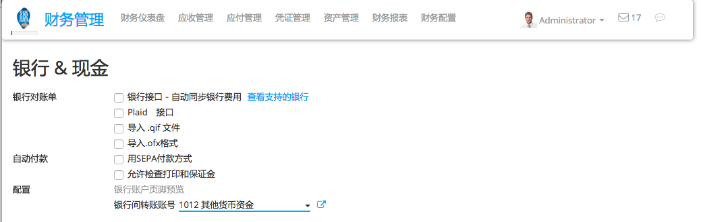创建第二银行账户/日记账
在我们可以注册一个内部转让之前, 我们需要在会计仪表板上添加一个新的银行账户。进入会计模块,点击:menuselection:[UNKNOWN NODE title_reference]. 创建一个新的银行账户。你应该填写 Account Number. 您还可以创建和编辑你的银行详细信息。
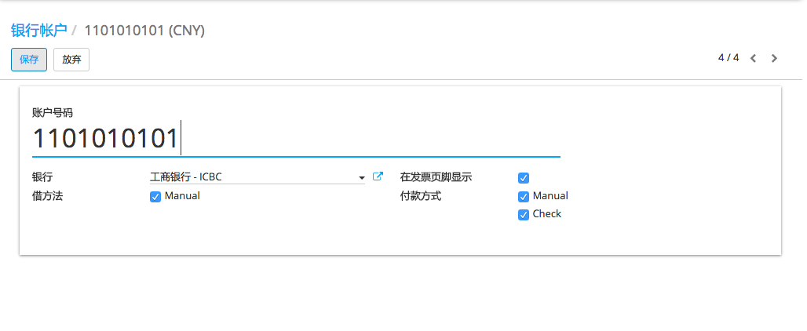通过保存更改, 你现在有2个银行账户。
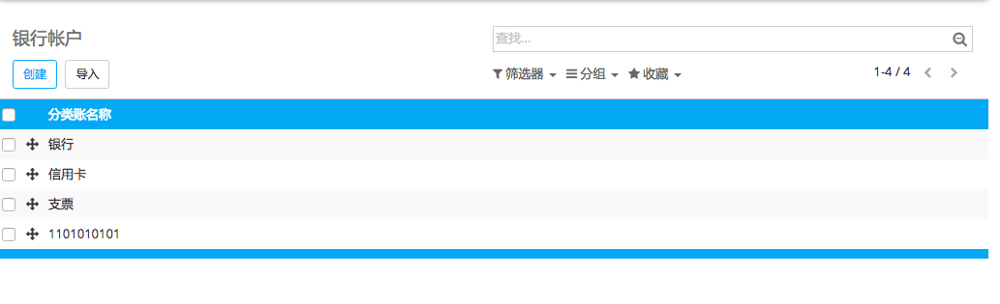登记一个从一个银行到另外一个银行的内部转账。
现在我们将把50.000欧元从我们的 Bank 转到**Bank BE57 0633 9533 1498**账户。
记录内部转账
第一步是注册内部paiement。为此,进入你的会计仪表板。点击的**more** 按钮并选择:menuselection:[UNKNOWN NODE title_reference].
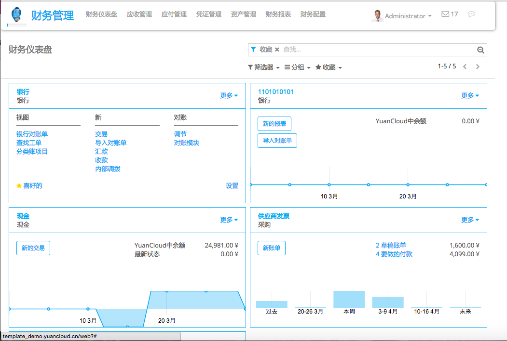创建一个新的付款。付款类型将自动设置为内部转让。选择您想要转移的* 银行 ,指定**Amount**和添加一个 **Memo* (如果你需要)。
注解
备忘录是很重要的,如果你想自动核销(see).
保存并确认变更登记付款。
在会计方面, 钱现在登记在转移账户。我们需要导入银行对账单, 将钱登记在最终的账户.
导入银行对账单并调节
注意,银行余额在YuanCloud的计算与银行最新的对账单是不同的.
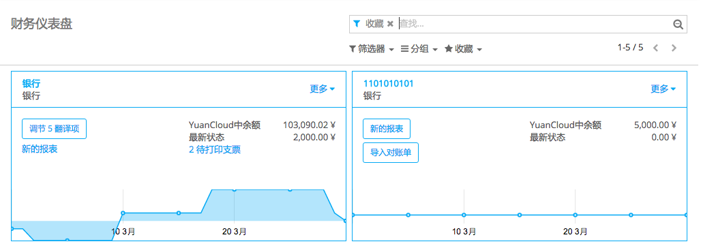这是因为我们没有导入银行对账单来确认付出和收到的钱。因此需要导入你的银行对账单,将付款和正确的银行对账单行核销。一旦你收到银行对账单点, 在相应的银行点击**new statement**导入。
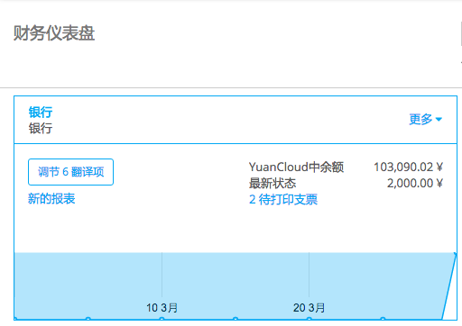填上**Transactions line**。一旦完成,YuanCloud将显示 Computed Balance。计算的余额是理论上你的账户的余额。如果与银行对账单一致,就意味着没有错误。填写**Ending balance** ,然后点击**Reconcile** 按钮。
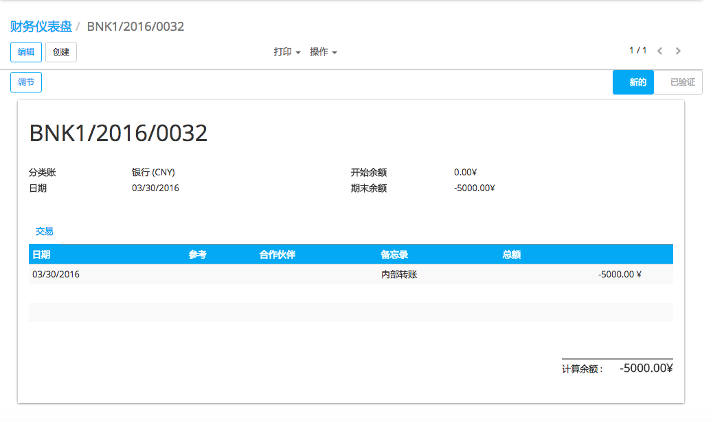下列窗口将会打开：
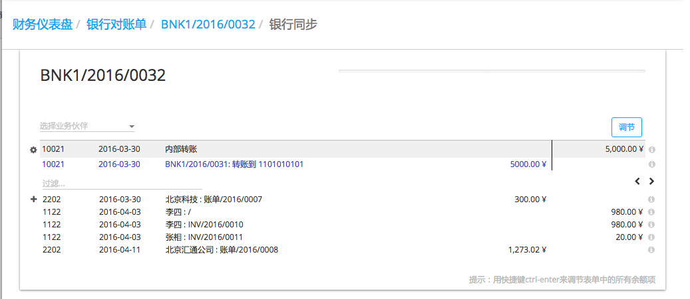你需要为paiement选择同行。选择正确的银行对账单对应paiement, 点击* 核销 [UNKNOWN NODE problematic]按钮。关闭对账单来完成这项交易.
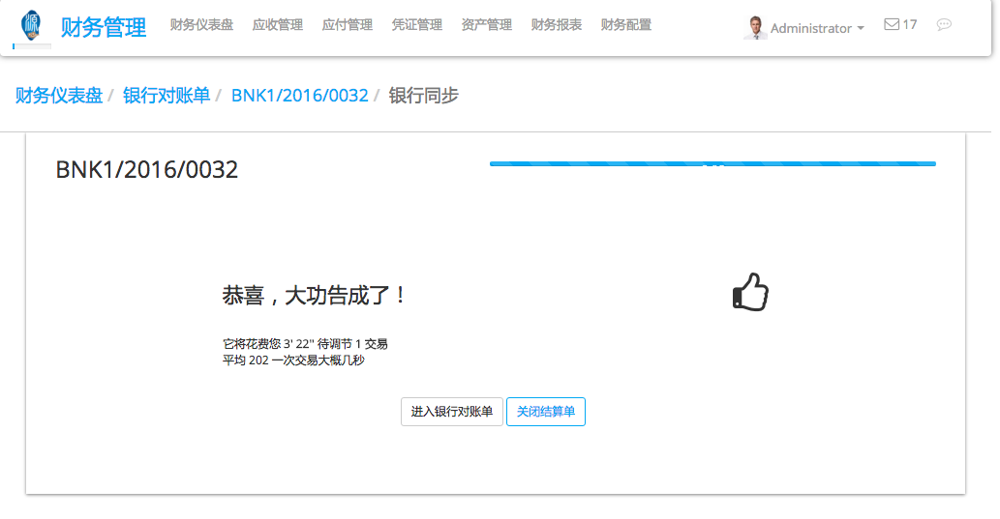一旦你收到第二个银行对账单, 需要重复相同的步骤。注意,如果指定了正确的金额,在银行对账单和付款事务有相同的备忘录, 核销就会自动发生。
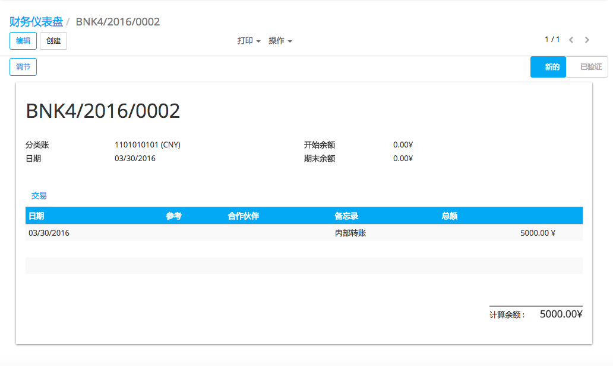